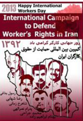

پذيرش > اخبار > آغاز به کار کمپین بین المللی حمایت از حقوق کارگران ایران


 آغاز به کار کمپین بین المللی حمایت از حقوق کارگران ایران آغاز به کار کمپین بین المللی حمایت از حقوق کارگران ایران
3 اردیبهشت 1392 - - نسخه قابل چاپ
تغییر برای برابری - در آستانه روز جهانی کارگر، کمپین بین المللی حمایت از حقوق کارگران ایران با انتشار بیانیه ای آغاز به کار کرد. در فراخوان این کمپین، از همگان خواسته شده است، تا به هر شکل و شیوه ممکن، از اول اردیبهشت 1392 تا 11 اردیبهشت 1392 خواسته های کارگران ایران اعم از کارگران شاغل، کارگران بیکار، زنان کارگر، کودکان کار، کارگران افغان ، به ویژه کارگران در بند را بیان کنند.
شیرین عبادی از حامیان این کمپین در گفت و گو با دویچهوله هدف اصلی این کمپین را رساندن صدای کارگران ایران به تمام دنیا اعلام کرده است. به گفته وی:«افرادی که خواستههای منطقی و مشروعی دارند، ولیکن بهجای آن که حکومت حرف آنها را بشنود، آنها را به زندانهای طویلالمدت میاندازد، بایستی صدایشان شنیده شود و در حقیقت این کمپینها هر شش ماه یکبار بلندگوی آن گروهی از مردم ایران است که صدایشان به علت سانسور شدید شنیده نمیشود».

در فراخوان کمپین بین المللی حمایت از حقوق کارگران ایران، گزارش کوتاهی از وضعیت معیشت کارگران – حوادث کار – بیکاری کارگران – کارگران زندانی - زنان کارگر – کودکان کار و کارگران افغان، ضمیمه ای پیوست شده است. به گزارش سایت کانون مدافعان حقوق بشر، متن کامل فراخوان "کمپین بین المللی حمایت از حقوق کارگران ایران" که در تاریخ اول اردیبهشت ماه 1392 منتشر شده، به شرح زیر است:
فراخوان "کمپین بین المللی حمایت از حقوق کارگران ایران"
روز جهانی کارگر گرامی باد!
اول ماه مه 2013-11 اردیبهشت 1392
مردم آزاده جهان ، هموطنان عزیز ایرانی
اجرای سیاست های ضد ملی و ضد کارگری مقامات مسوول جمهوری اسلامی ایران ، زندگی و معیشت میلیون ها کارگر و خانواده های کارگری در ایران را به خطر انداخته است . سیاست های تعدیل اقتصادی ، حذف یارانه ها ،خصوصی سازی و رشد اقتصاد انگلی ، موجب تعطیلی بسیاری از مراکز تولیدی شده و تولید صنعتی و کشاورزی را به سمت فعالیت های غیرمولد برده است .گزارش های کمیسیون اقتصادی مجلس شورای اسلامی به نقل از پایگاه خبری کارگر نیوز در 26 شهریور 91 ، نشانگر آن است که 50 درصد واحدهای تولیدی در ایران تعطیل و یا در شرف تعطیلی اند و اکثرواحدهای تولیدی بزرگ ، با کمتر از 30 در صد ظرفیت مشغول به کارند.
بی توجهی به بحران اشتغال ، وضعیت معیشت کارگران و تعیین دستمزدی به میزان یک سوم خط فقر اعلام شده در سال جاری ، بدون حق تشکل مستقل کارگری، اعتراض و اعتصاب و دفاع از حقوق کارگران ، کار و زندگی کارگران ، این مهم ترین سرمایه ملی وموثرترین نیروی اجتماعی را ،با دشواری های بی سابقه ای روبروکرده است.
فقدان ایمنی محیط کار و وسایل مناسب کار ، موجب رشد فزاینده ی حوادث ناشی از کار شده است . بنا به گزارشات سازمان پزشکی قانونی ، روزانه 5 کارگر جان خود را از دست می دهند.
در چنین شرایطی ، ممانعت از فعالیت های متشکل و مستقل کارگران در سندیکاها و تشکل های کارگری ، سرکوب کارگران و فعالان کارگری به جرم حق طلبی و دفاع از حقوق صنفی و قانونی ، موجب بازداشت و شکنجه و صدور احکام سنگین برای ده ها نفر از کارگران پیشرو شده است.
کارگران ایران با همه ی فشارها و محدودیت های اجتماعی ، سیاسی ، اقتصادی ، همواره ، نیروی عظیمی در مقابله با ظلم و استثماربوده و هستند . به همین دلیل به شدیدترین شکل ، سرکوب می شوند . ستار بهشتی کارگر وبلاگ نویس و منتقد سیاست های ضد مردمی جمهوری اسلامی ایران ، نمونه ای از کارگران آگاه و مبارز ایرانی است که متاسفانه یک هفته پس از بازداشت در سال گذشته ،بر اثر شکنجه به قتل رسید.
با تاکید بر ضرورت اجرای تعهدات ملی و بین المللی از جمله تعهدات پذیرفته شده جمهوری اسلامی ایران، در مقاوله نامه های شماره 98 و 89 سازمان بین المللی کار ILO در مورد آزادی تشکل یابی کارگران و معلمان ،" کمپین بین المللی حمایت از حقوق کارگران ایران " برای همد لی و همراهی با کارگران ایران از کلیه افرادی که نگران آینده ایران و خواهان آزادی تشکل های مستقل کارگری و عدالت اجتماعی و آزادی کارگران مبارز در بند هستند، درخواست می نماید به هر شکل و شیوه ممکن، از اول اردیبهشت 1392 )21 آوریل 2013 ( تا اول ماه می 2013 )11 اردیبهشت 1392( در یک همبستگی جهانی، صدای همه کارگران ایران اعم از کارگران شاغل، کارگران بیکار، زنان کارگر، کودکان کار، کارگران افغان، به ویژه کارگران در بند باشیم.
کمپین بین المللی حمایت از حقوق کارگران ایران
جهت آشکار شدن وضعیت دشوار کار و زندگی کارگران در ایران ، گزارش کوتاهی از وضعیت معیشت کارگران – حوادث کار – بیکاری کارگران – کارگران زندانی - زنان کارگر – کودکان کار و کارگران افغان، پیوست است.
- وضعیت معیشت کارگران در ایران
کارگران در ایران زیر خط فقر زندگی می کنند.
اول دی ماه سال 1391 یکی از اعضای شورای عالی کار،سازمانی وابسته به دولت، در گفتگو با خبرگزاری دولتی پانا ، خط فقر در ایران را یک میلیون و پانصدهزارتومان برای خانوار 4 نفری اعلام کرده است. با توجه به نرخ تورم که توسط بانک مرکزی و مرکز آمار ایران اعلام شده ، نرخ تورم کالاهای مصرفی و خدماتی در ماه های پایانی سال 1391 به بیش از 31 درصد رسیده و این نرخ تورم در مورد کالاهای مصرفی بیش از 40 درصد اعلام شده است. با توجه به این نرخ تورم ،خط فقر در آغاز سال 1392 ، حدود یک میلیون و هفتصد هزارتومان در ماه برآورد می شود. با مقایسه این رقم با حداقل دستمزد تعیین شده در سال 1392از سوی شورای عالی کار، یعنی رقم چهارصد و هشتاد و هفت هزارتومان در ماه ، می توان تاحدودی به عمق فاجعه پی برد. در موارد بسیاری حتی این رقم ناچیز نیز به موقع پرداخت نمی شود و گاه ، ماه ها به تعویق می افتد. برای نمونه می توان به 2300کارگر کارخانه های نورد لوله صفا و پروفیل ساوه اشاره کرد که در آستانه سال نو 1392 ، نه تنها عیدی و پاداش خود را دریافت نکرده اند، بلکه حقوق سه ماه پایان سال آنان نیز به تعویق افتاده است و یا کارگران راه سازی کهگیلویه و بویر احمد که تا اسفند سال 1391، به مدت هفت ماه از حقوق و مزایای خود محروم بوده اند .زندگی در چنین شرایطی به مثابه مرگ تدریجی برای کارگران و خانواده های کارگری است.
این در شرایطی است که روند تعیین حداقل دستمزد ماهانه کارگران از سوی شورای عالی کار،وزارت تعاون،کار و رفاه اجتماعی، حتی مطابق با ماده ۴۱ قانون کار نیست. ضمن آنکه در ماده ۲۵ اعلامیه جهانی حقوق بشر که ایران نیز آن را امضا کرده، آمده است:« هرکس حق دارد از سطح معیشتی کافی برای سلامتی و رفاه خود و خانوادهاش از قبیل خوراک، پوشاک، مسکن و مراقبتهای پزشکی و خدمات اجتماعی ضروری بهره مند گردد و حق دارد به هنگام بیکاری، بیماری، از کارافتادهگی، بیوهگی و سالخوردهگی یا فقدان وسیلهٔ امرار معاش و گذران زندگی که خارج از اختیار وی است تامین گردد.»
- حوادث حین کار
مرگ تدریجی تنها خطری نیست که کارگران را تهدید می کند. مرگ ناگهانی در اثر سوانح کار، یکی از موارد مهمی است که هر ساله جان هزاران کارگر را می گیرد و چون اغلب کارگران در کارگاه های کوچک بدون هیچ گونه نظارتی اشتغال دارند ،خانواده های کارگرانی که در اثر حوادث ناشی ازکار ، جان خود را از دست می دهند ، فاقد بیمه های حمایتی هستند . براساس گزارشات سازمان پزشکی قانونی ، روزانه 5 کارگر در اثر حوادث ناشی از کار، جان خود را از دست می دهند و این نرخ هر ساله رو به افزایش است چنان که در سال 1389 تعداد تلفات ناشی از حوادث کار ، 1290 نفر گزارش شده ، در حالی که این رقم در سال 1390 به 1507 نفر بالغ گردیده است . بر اساس آمارها و گزارش های رسمی ، حوادث ناشی از کار، دومین علت مرگ و میر در ایران است .
سقوط از بالای ساختمان های مرتفع در هنگام کار، انفجار معادن، آتش سوزی در محل کار، ریزش ساختمان در محل کار، و سفوط در چاه های عمیق عمده ترین دلایل حوادث کار هستند که در تمام موارد به دلیل فقدان ایمنی محیط کار و نبود وسایل مناسب کار رخ داده است.در عین حال،در گزارش های خبرگزاری ایلنا و نیز تشکل های کارگری از «اهمال» بازرسان وزارت تعاون،کار و رفاه اجتماعی سخن گفته شده است.
در مورد حوادث حین کار،نمونه های بیشماری از این دست وجود دارد از جمله آتش سوزی در آذرماه سال 1390 در کارخانه فولاد غدیر یزد که طی آن 18 کارگر جان خود را از دست دادند و عده ای نیز تا نیمی از بدنشان در آتش سوخت. در اسفند ماه سال گذشته، انفجار معدن یال شمالی ذغال سنگ در طبس جان 8 کارگر را گرفت.
در شماری از این حوادث،پیگیری های قضایی تا کنون ،به نتیجه نرسیده است.
- اخراج کارگران و بحران اشتغال
اغلب کارگران در ایران ، بر اساس قراردادهای موقت، پیمانی،روزمزدی، ساعتی و سفیدامضا به کار گرفته می شوند. این کارگران فاقد بیمه های بیکاری و دوران بیماری یا آسیب دیدگی هستند. این قرادادها، اخراج و بی کارسازی انفرادی یا گروهی آنان را ،برای کارفرمایان بسیار آسان کرده است. با توجه به تحریم های فزاینده اقتصادی علیه ایران و سیاست های ضد ملی حکومت جمهوری اسلامی ایران و افزایش سرسام آور نرخ ارز در ایران زندگی مردم به ویژه کارگران بسیار دشوار تر شده است .
بسیاری از کارفرمایان به سبب پیوندهایی که با دستگاه حکومتی دارند، همواره از نرخ دولتی ارز برای واردات مواد اولیه و ماشین آلات بهره مند هستند و در بسیاری از موارد ، فروش ارزهای رانتی یا سرمایه گذاری در امور تجاری، از تولید کالا ، سودآور تر شده است در نتیجه ، کارفرمایان ، بدون هیچ نظارتی کارخانه ها و کارگاه های تولیدی را تعطیل و کارگران را اخراج می کنند . بنا بر اظهارات رئیس خانه کارگر، که یک نهاد دولتی است، از اول ماه مه 1390 تا تاریخ مشابه در سال 1391، بیش از یکصد هزار نفر کارگر از کار اخراج شده اند.
 کارگران زندانی کارگران زندانی
با وجود به رسمیت شناخته شدن حق کارگران برای ایجاد انجمن های صنفی و سراسری در قوانین جمهوری اسلامی ایران ، دولت ، با تشکل های مستقلی که توسط خود کارگران و برای پیگیری خواسته های به حق شان تشکیل شده ، به شدت به مقابله برخاسته است و کارگران پیشرویی را که در ایجاد سندیکا ها و تشکل های کارگری تلاش نموده اند ، تحت تعقیب و آزار قرار می دهد. نمونه های آن را می توان در سرکوب خشن "سندیکای کارگران شرکت واحد اتوبوسرانی تهران و حومه " ، " سندیکای کارگران نیشکر هفت تپه اهواز "، "سندیکای کارگران نقاش " ، "اتحادیه کارگران آزاد "و "کمیته پیگیری برای کمک به ایجاد تشکل های کارگری "، مشاهده کرد . بسیاری از اعضای این تشکل ها به زندان های طویل المدت محکوم شده اند و هم اکنون برخی از آنان در زندان به سر می برند. شاهرخ زمانی محکوم به 11 سال ، رضا شهابی 6 سال ، محمد جراحی 5 سال ، بهنام ابراهیم زاده ۵ سال و پدرام نصرالهی به 18 ماه حبس محکوم شده اند .( بهنام ابراهیم زاده تا زمان تهیه گزارش در مرخصی به سر می برد) علاوه بر اینان شمار زیادی از فعالان کارگری و مدافعان حقوق معلمان در زندان های جمهوری اسلامی در بندند و بسیاری دیگر نیز با وثیقه های سنگین به طور موقت تا تشکیل دادگاه ، آزاد شده اند .
تعدادی از کارگران زندانی از جمله محمد جراحی و شاهرخ زمانی به شدت بیمار هستند و به مراقبت های پزشکی احتیاج دارند.
اسامی کارگران و معلمان در بند :شاهرخ زمانی – محمد جراحی –بهروز علامه زاده – بهروز نیکوفرد – علیرضا سعیدی –غالب حسینی – علی آزادی – پدرام نصرالهی – رسول بداغی )عضو کانون صنفی معلمان (– عبدالرضا قنبری)عضو کانون صنفی معلمان (– مهدی فرحی شاندیز – شریف ساعد پناه – مظفر صالح نیا
وضعیت زنان کارگر
زنان کارگر، درجامعه مردسالار ایران از تبعیض های چندگانه ی تاریخی ، فرهنگی ، اجتماعی و قانونی رنج می برند و اولین قربانیان وضعیت بحرانی سیاسی ، اجتماعی ، اقتصادی در ایران هستند .زنان کارگر،علاوه بر این که مشاغل کم در آمد و پر زحمت با ساعات کار طولانی و غیرقانونی در اختیار دارند و در شرایط کار مساوی با مردان دستمزد کمتری دریافت می کنند ، در صف اول اخراج ها نیز قرار دارند . افزایش نرخ بیکاری زنان ، به نقل از سایت مرکز آمار ایران ، از 33 درصد در سال 84 به 43 درصد در سال 90 نشانگر این واقعیت است .
زنان کارگردر آمارهای رسمی پنج درصد کل کارگران را تشکیل می دهند و چون اغلب در بخش غیر رسمی شاغل هستند ، در آمارها جایی ندارند و نادیده گرفته می شوند .هر چند آنان در بخش رسمی نیز از حقوق اولیه قانونی خود نیز بهره مند نمی شوند و طبق قانون کار امتیازاتی که ظاهرا برای کمک به زنان کارگر ، در نظر گرفته شده ، موجب شده است تا کارفرما ها به استخدام زنان کارگر، رغبتی نشان ندهند و برای فرار از قانون مرخصی زایمان ، حق شیردادن ، ایجاد شیرخوارگاه و مهدکودک ، از استخدام زنان کارگر سرباز زنند ویا هنگام عقد قررداد کار از کارگر زن تعهد گیرند که طی زمان قرارداد حق حامله شدن ندارند .
بر اساس ماده 191 قانون کار ، کارگاه های کوچک کمتر از 10 نفر ،از مقرارت قانون کار مستثنی هستند .
بنا بر گزارش های موجود ،کارگران شاغل در این بخش که اکثریت کارگران زن را تشکیل می دهند.، بدون هیچ گونه حق بیمه درمانی ، بیمه بازنشستگی ، مرخصی سالانه ، مرخصی زایمان ، با کار طاقت فرسا و ساعات کار طولانی ودستمزد اندک و بدون هیچ نظارتی در رعایت ایمنی کار و بهداشت محیط ، مشغول به کارند .
بخش بزرگی از زنان کارگر نیز به مشاغل خانگی روی آورده اند که اغلب با کودکان و همراه با خانواده خود با ساعات کار بسیار طولانی به تولید خانگی می پردازند و دولت نیز هیچونه نظارتی بر این بخش تولیدی ندارد .
علاوه بر این ، با تصویب" طرح دور کاری " دولت ، مشوق کارفرماها برای این نوع بهرکشی و افزایش فشارهای جسمی ، روحی ، روانی و انواع خشونت علیه زنان نیز می باشد.
متاسفانه به این کارگران باید کارگران تن فروش را هم اضافه نمود که هر روز بر تعدادشان افزوده می شود ، این بخش از کارگران زن ضمن این که هیچ گونه حق و حقوقی ندارند ، در معرض خطر دستگیری و زندان و اعدام نیز هستند .
- کودکان کار
کار کودکان زیر 15 سال ، بر اساس ماده 79 قانون کار ، ممنوع است . آمار دقیقی از کودکان کار در دست نیست ولی طبق آمارهای غیر رسمی بنا به گزارش سایت دولتی مشرق و مرکز پژوهش های مجلس در 17 مهر 1391 ،از 3 میلیون و 265 هزار کودک بازمانده از تحصیل ، به نظر می رسد ، حدود 3 میلیون نفر ، کودکان کار هستند .
کودکان کار ،اغلب در کارگاه های کوچک مشغول به کارند .و یا به مشاغل خانگی و یا دستفروشی در خیابان ها ، روی آورده اند .با توجه به نرخ 40 در صدی تورم و فقر خانوارهای محروم جامعه ایران ، تعداد این کودکان رو به افزایش است.
در شرایط کنونی،به ویژه با افزایش میزان اخراج کارگران از واحد های صنعتی و شرکت ها، زنان و کودکان در فقر و بی پناهی و بی قانونی رها شده اند و افزایش آمار تن فروشی زنان و خردسالان ، کاهش سن معتادان و افزایش بی سوادی و کم سوادی از پیامدهای آشکارآن است .
- کارگران افغان
وضعیت کارگران افغان و به طور کلی، کارگران مهاجر در ایران به شدت اسفناک است. از حدود دو میلیون کارگر افغان ساکن در ایران، بیش از 1400000 نفر آنان، یعنی بیش از دو سوم، فاقد مدارک قانونی کار هستند و با این که سال هاست در ایران مشغول به کارند، دولت به وضعیت اقامت آنان توجه نمی کند. این شرایط ، باعث شده است ، این کارگران حتی از آن بخش ناچیز حقوقی که دیگر کارگران برخوردارند، محروم باشند. دستمزد این کارگران در مقایسه با کارگران رسمی بسیار پایین تر و شرایط کاری شان دشوارتر است و از هیچ گونه بیمه درمانی، بازنشستگی و یا حوادث نیز برخوردار نیستند. فرزندان آنان از مدرسه و آموزش محروم هستند و برایشان برگه های هویت صادر نمی شودو در شرایط بسیار سختی روزگار می گذرانند .
ارسال به
بالاترین
،
توییتر
،
فریندفید
،
فیسبوک
در همين بخش :
 پروین ذبیحی برنده جایزه حقوق بشری سازمان غيردولتى اتريشى سودويند شد پروین ذبیحی برنده جایزه حقوق بشری سازمان غيردولتى اتريشى سودويند شد
پخش کارت پستال و بروشور در روز جهانی زن در تهران
تمدید زمان برای امضای بیانیهی جمعی از فعالان زن به مناسبت هشت مارس
مجوزی که در نطفه خفه شد
بیش از 2000 امضا در اعتراض به تبعیض های آموزشی به مجلس تحویل داده شد
ديگر بخش ها :
طرح یک میلیون امضا
|
مقالات
|
سایت نوشته ها
|
اخبار
|
گزارش كمپين
|
گفت و گو
|
علیه سکوت
|
كوچه به كوچه
|
نامه های شما
|
گزارش ویژه
|
گفتگو با اعضا
|
ویژه سالگرد کمپین
|
تصویر برابری
|
دل آرام علی
|
تریبون
|
مقالات
|
تاریخ شفاهی
|
خارج از چارچوب
|
کتابخانه
|
درباره کمپین
|
کمپین در شهرها
|
کمپین در بند
|
صدای تغییر
|
ویژه 22 خرداد
|
لایحه حمایت از خانواده
|
گالری
|
عشا مومنی
|
امیر یعقوبعلی
|
خدیجه مقدم
|
راحله عسگری زاده و نسیم خسروی
|
پروین اردلان،جلوه جواهری، مریم حسین خواه، ناهید کشاورز
|
زینب پیغمبرزاده
|
سعیده امین، سارا ایمانیان، محبوبه حسین زاده، ناهید کشاورز و همایون نامی
|
احترام شادفر
|
نسیم سرابندی زاده،فاطمه دهدشتی
|
وبلاگ مهمان
|
پرونده خرم آباد
|
دستگیری ها
|
مریم مالک
|
پرستو اللهیاری
|
مهرنوش اعتمادی
|
سمیه رشیدی
|
Other Languages
|
همراهان
|
«فراخوان کمپین ده روز با بهاره هدایت»
| English
|